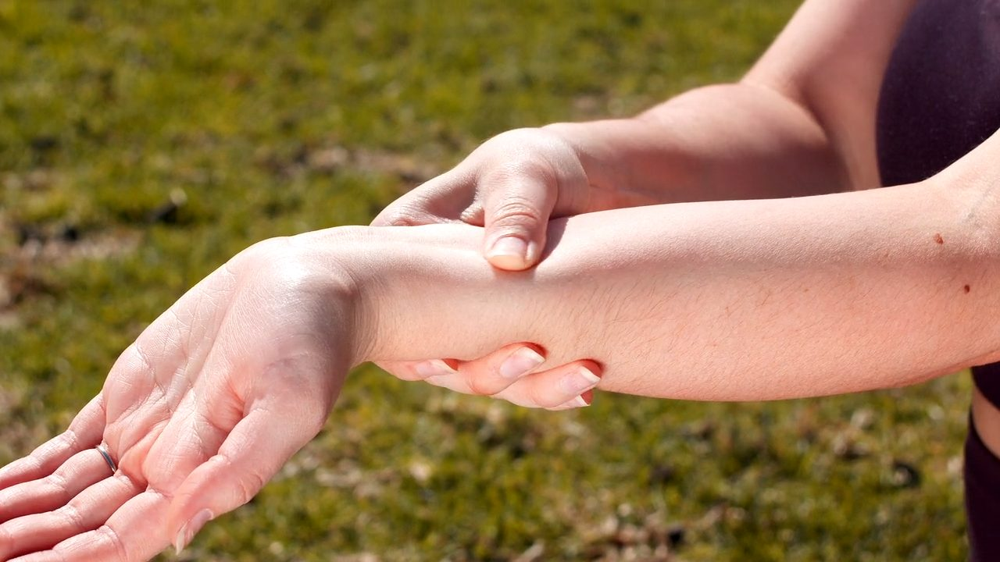
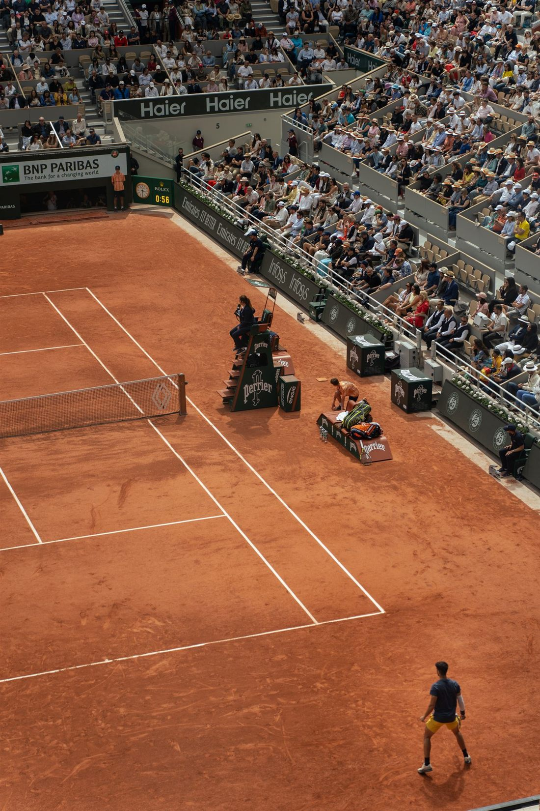

Spielstil
Mehr Kontrolle, mehr Power oder mehr Spin – abgestimmt darauf, wie du spielst.
Schlägerberatung & Schlägerservice aus Hamburg
Wir vermessen deine Tennisschläger, gleichen sie an und stimmen sie auf dein Spiel ab.
Unser Konzept
Die meisten spielen ihre Schläger so, wie sie aus dem Laden kommen. Wir messen, was im Datenblatt fehlt, gleichen mehrere Schläger aufs Gramm an und stimmen sie auf dich ab.
Mehrere Schläger, ein Gefühl: Wir gleichen sie so genau wie möglich an.
Mehr erfahrenGewicht und Verteilung gezielt anpassen, passend zu deinem Spielstil.
Mehr erfahrenDie richtige Saite und Härte für deinen Schläger, dein Spiel und deinen Arm.
Mehr erfahrenSpielstil, Armgesundheit, Material: Am Ende steht eine persönliche Empfehlung.
Mehr erfahrenProbier es im Tuning-Simulator aus und sieh, wie sich ein Schläger verändert.
Probier es aus
Ein paar Gramm an der richtigen Stelle verändern, wie sich dein Schläger spielt.

Deine Stellschrauben
Regler nach oben ziehen für mehr, nach unten für weniger Gewicht.
So verändert sich dein Schläger
Richtwerte an einem Beispielschläger, keine exakten Angaben. Sie zeigen dir aber gut, was welche Stellschraube bewirkt.
Mehr Kontrolle, mehr Power oder mehr Spin – abgestimmt darauf, wie du spielst.
Die richtige Masse und Saite nehmen Vibrationen aus dem Arm und entlasten Ellenbogen und Handgelenk.
Stabiler im Treffpunkt, schneller im Schwung, verlässlicher unter Druck.
Im Tuning-Termin messen wir deinen Schläger und finden es gemeinsam heraus.
Worauf es ankommt
Das Gewicht des besaiteten Schlägers. Mehr Masse bringt Stabilität und Ruhe im Treffpunkt, kostet aber auch mehr Kraft.
Wo der Schwerpunkt liegt, gemessen ab dem Griffende. Ein kopflastiger Schläger fühlt sich kraftvoll an, ein kopfleichter wendig und kontrolliert.
Das Schwunggewicht: wie schwer sich der Schläger im Schwung anfühlt. Einer der wichtigsten Werte überhaupt, und trotzdem steht er selten im Datenblatt. Je niedriger das Swingweight, desto schneller kannst du den Schläger schwingen.
Der Widerstand gegen Verdrehen – im Datenblatt genauso selten zu finden wie das Swingweight. Er bestimmt, wie stabil der Schläger im Treffpunkt bleibt und wie viel Spin du spielen kannst.
Warum es sich lohnt

Zwei Schläger desselben Modells sind ab Werk selten wirklich gleich. Gewicht, Balance und Schwunggewicht weichen oft spürbar voneinander ab – und damit auch, wie sich jeder Schläger spielt.

Beschwerden entstehen oft durch eine ungünstige Kombination aus Material, Schlägereigenschaften und Spielstil. Die richtige Abstimmung kann deinen Arm entlasten.
Wenn Schläger und Spielstil zusammenpassen, triffst du sauberer, kontrollierter und mit mehr Selbstvertrauen. Oft machen schon wenige Gramm an der richtigen Stelle einen deutlichen Unterschied.

Auf der Profi-Tour spielt kaum jemand einen Schläger direkt aus dem Laden. Die Profis lassen ihre Schläger vermessen, angleichen und genau auf ihr Spiel abstimmen – damit sich jeder Schläger in der Tasche gleich anfühlt.
Das bekommst du
Nach jedem Matching und Tuning bekommst du ein Zertifikat mit allen Werten und jeder Anpassung, schwarz auf weiß.
| Schläger | Gewicht g | Balance cm | SW kg·cm² | TW kg·cm² | |
|---|---|---|---|---|---|
| 1 | vorher | 301,4 | 31,5 | 297 | 13,4 |
| nachher | 304,7 | 31,8 | 305 | 13,7 | |
| 2 | vorher | 303,2 | 31,9 | 302 | 13,6 |
| nachher | 304,9 | 31,8 | 305 | 13,7 | |
| 3 | vorher | 304,8 | 31,8 | 305 | 13,7 |
| nachher | 304,8 | 31,8 | 305 | 13,7 | |
| Max. Abw. | vorher | 3,4 | 0,4 | 8 | 0,3 |
| nachher | 0,2 | 0,0 | 0 | 0,0 |
| Schläger | Position | Material | Menge |
|---|---|---|---|
| 1 | 12 Uhr | Bleiband | 1,0 g |
| 3 und 9 Uhr | Bleiband | je 0,6 g | |
| Griff | Silikon | 1,1 g | |
| 2 | 12 Uhr | Bleiband | 0,6 g |
| 3 und 9 Uhr | Bleiband | je 0,3 g | |
| 3 | Referenz, unverändert | ||
Polyester 1,25 mm · Härte 23/22 kg
| Schläger | Gewicht g | Balance cm | SW kg·cm² | TW kg·cm² |
|---|---|---|---|---|
| 1 | 321,5 | 33,0 | 324 | 14,4 |
| 2 | 321,7 | 33,0 | 324 | 14,4 |
| 3 | 321,6 | 33,0 | 325 | 14,4 |
Alle Werte ohne Besaitung gemessen, sofern nicht anders angegeben. Balance ab Griffende. SW = Swingweight (Achse 10 cm über dem Griffende), TW = Twistweight. Gewicht mit Präzisionswaage, Auflösung 0,1 g.